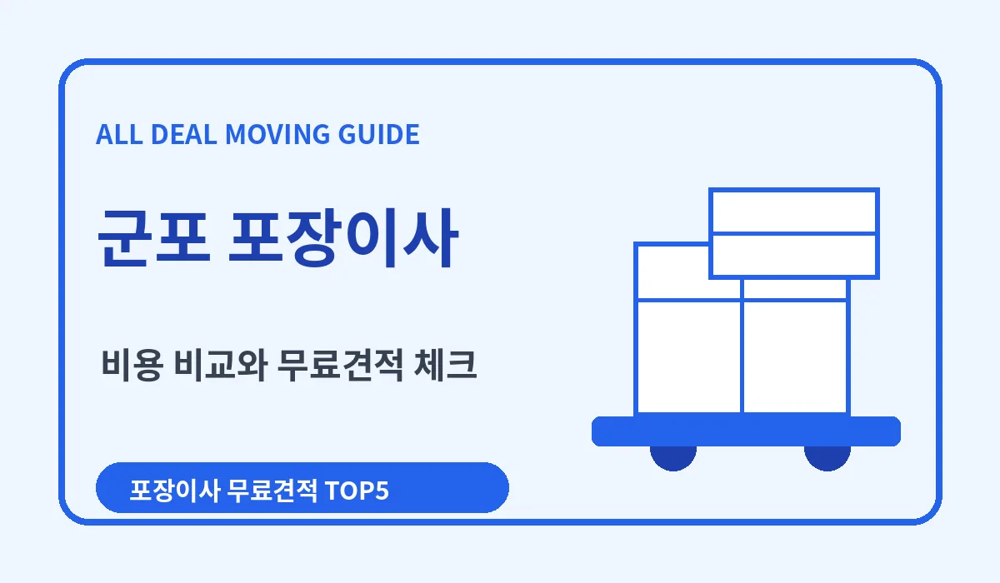
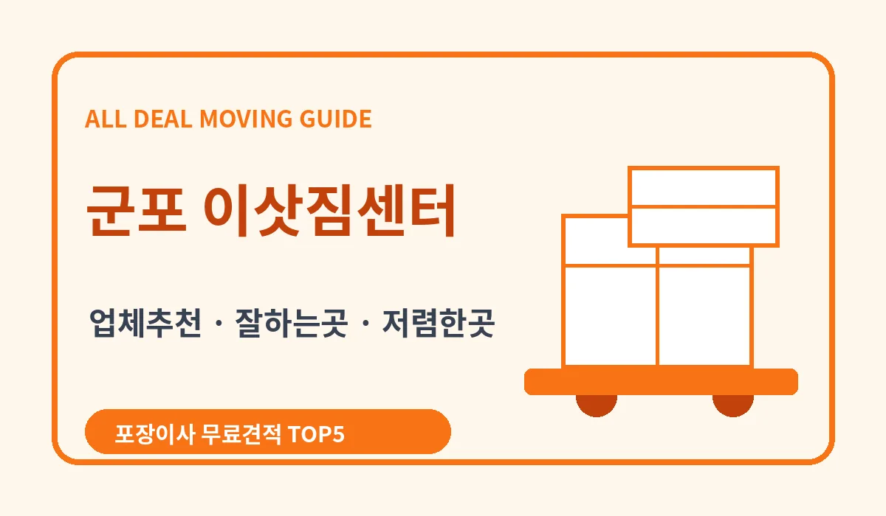

군포 포장이사 비교 가이드
군포포장이사 업체 추천 비용 비교견적 잘하는곳 안내
군포포장이사 비용, 가격, 무료견적, 업체추천, 비교견적, 저렴한곳, 잘하는곳 기준을 정리한 지역 포장이사 안내입니다.
군포포장이사 먼저 확인할 점
군포에서 이사를 준비하다 보면 업체 이름보다 먼저 봐야 할 것이 있습니다. 바로 우리 집 조건에 맞는 군포포장이사 비용과 작업 범위입니다. 산본과 당동, 금정 생활권은 단지별 주차와 반입 조건을 확인해야 합니다. 아파트 밀집 지역은 엘리베이터 예약과 작업 시간이 견적에 영향을 줍니다. 그래서 군포포장이사 추천 정보를 볼 때는 가격 하나만 비교하기보다 견적서, 작업 인원, 차량, 사다리차, 정리 범위까지 같이 확인해야 합니다. 이 글은 군포포장이사 업체추천을 찾는 분들이 비용, 비교견적, 잘하는곳, 저렴한곳 기준을 한 번에 정리할 수 있도록 구성했습니다.

군포포장이사 비용과 가격이 달라지는 이유
군포포장이사 비용은 평수만으로 정해지지 않습니다. 짐 양, 이동 거리, 층수, 엘리베이터 사용 가능 여부, 사다리차 필요 여부가 함께 반영됩니다. 같은 군포 안에서 이동해도 출발지와 도착지 조건이 다르면 포장이사 가격이 달라질 수 있습니다.
견적을 받을 때는 기본 운반비만 보지 말고 포장재, 인력, 차량, 사다리차, 에어컨 이전, 대형 가전 분리, 폐기물 처리 여부까지 확인하는 것이 좋습니다. 이런 항목을 나누어 봐야 군포포장이사 저렴한곳과 실제로 합리적인 업체를 구분할 수 있습니다.
군포포장이사 업체추천 비교 기준
군포포장이사 업체추천을 볼 때는 광고 문구보다 최근 후기와 상담 응대가 중요합니다. 견적 문의에 답변이 빠르고 포함 항목을 정확히 설명하는 업체일수록 이사 당일 변수에도 대응하기 쉽습니다.
잘하는곳을 찾고 싶다면 작업 사진, 파손 보상 기준, 방문 견적 여부, 계약서 작성 여부를 함께 보세요. 포장이사업체마다 인원 구성과 정리 범위가 다르므로 최소 두세 곳의 비교견적을 받아보는 편이 안전합니다.

군포포장이사 무료견적 받을 때 체크할 내용
무료견적을 신청하기 전에는 이사 날짜, 출발지와 도착지 주소, 평수, 큰 가구 수, 가전 수, 엘리베이터 예약 여부를 정리해두면 좋습니다. 정보가 구체적일수록 군포포장이사 견적의 오차가 줄어듭니다.
전화 견적만으로 결정하기 어렵다면 방문 견적을 요청하는 것이 좋습니다. 특히 짐이 많거나 고층 이사, 빌라 계단 작업, 좁은 골목 진입이 예상된다면 현장 확인이 포장이사 비용 비교에 도움이 됩니다.
군포이삿짐센터 선택 시 피해야 할 실수
가장 흔한 실수는 싼곳이라는 말만 보고 바로 계약하는 것입니다. 처음에는 낮은 금액처럼 보여도 사다리차, 추가 인원, 포장재, 가전 분리 비용이 빠져 있으면 최종 금액이 올라갈 수 있습니다.
또 하나는 계약서 없이 예약금만 보내는 경우입니다. 군포이삿짐센터를 고를 때는 작업 날짜, 차량 수, 인원, 포함 서비스, 추가 비용 기준을 문자나 계약서로 남겨두는 것이 좋습니다.
군포포장이사 잘하는곳을 고르는 현실 기준
잘하는곳은 단순히 빠르게 옮기는 업체가 아닙니다. 물건을 분류하고, 파손 위험이 큰 가전과 가구를 따로 포장하며, 도착지에서 큰 짐 위치를 정확히 맞춰주는 업체가 만족도가 높습니다.
군포포장이사 후기를 볼 때는 비용이 싸다는 말보다 시간 약속, 마무리 정리, 추가 비용 여부, 직원 응대에 대한 내용을 확인하세요. 실제 이용자가 남긴 구체적인 후기가 업체 비교에 더 도움이 됩니다.
군포포장이사 추천 키워드 정리
검색할 때는 군포포장이사, 군포포장이사 비용, 군포포장이사 견적, 군포포장이사 업체추천, 군포포장이사 비교견적을 함께 확인하면 좋습니다.
추가로 군포포장이사 잘하는곳, 군포포장이사 저렴한곳, 군포포장이사 싼곳, 군포이삿짐센터, 군포포장이사업체 같은 세부키워드도 비교하면 선택 폭이 넓어집니다.
군포포장이사 결론
군포에서 포장이사를 준비한다면 한 곳만 보고 결정하기보다 비용, 가격, 견적, 작업 범위, 후기, 보상 기준을 같이 비교하는 것이 좋습니다. 특히 무료견적을 여러 곳에서 받아보면 우리 집 조건에 맞는 업체를 찾기가 쉬워집니다.
결국 좋은 포장이사 선택은 무조건 최저가가 아니라 합리적인 비용과 안정적인 작업 범위의 균형입니다. 군포포장이사 업체추천을 찾고 있다면 비교견적을 통해 잘하는곳과 저렴한곳을 함께 확인해보세요.